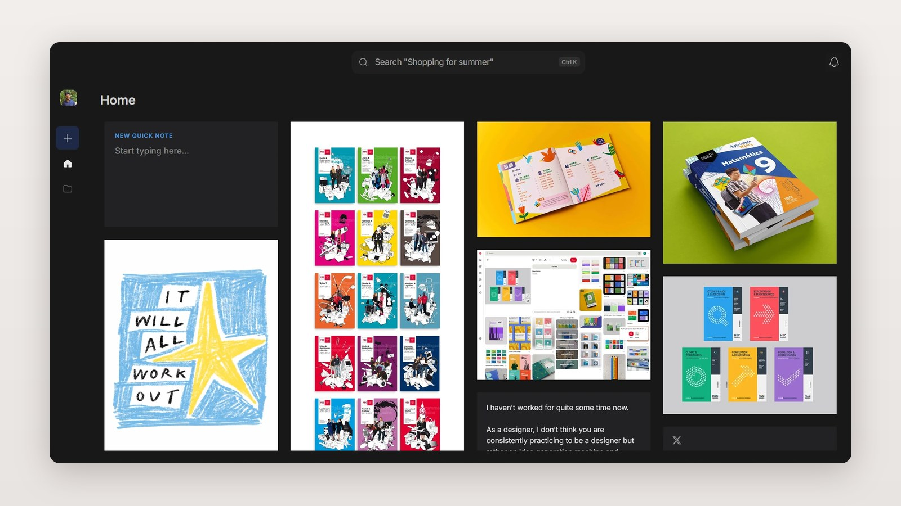
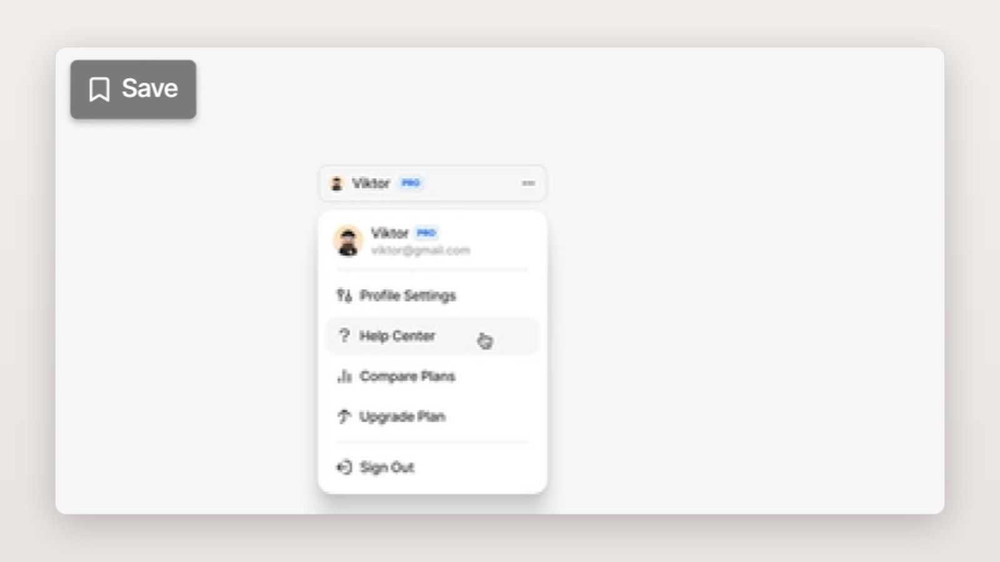
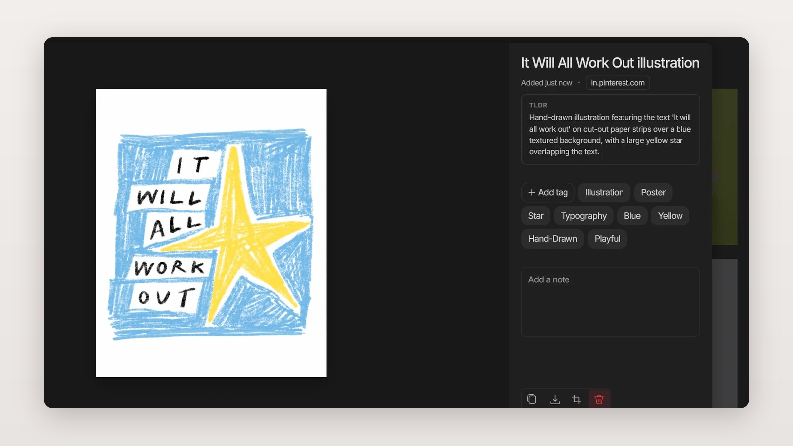
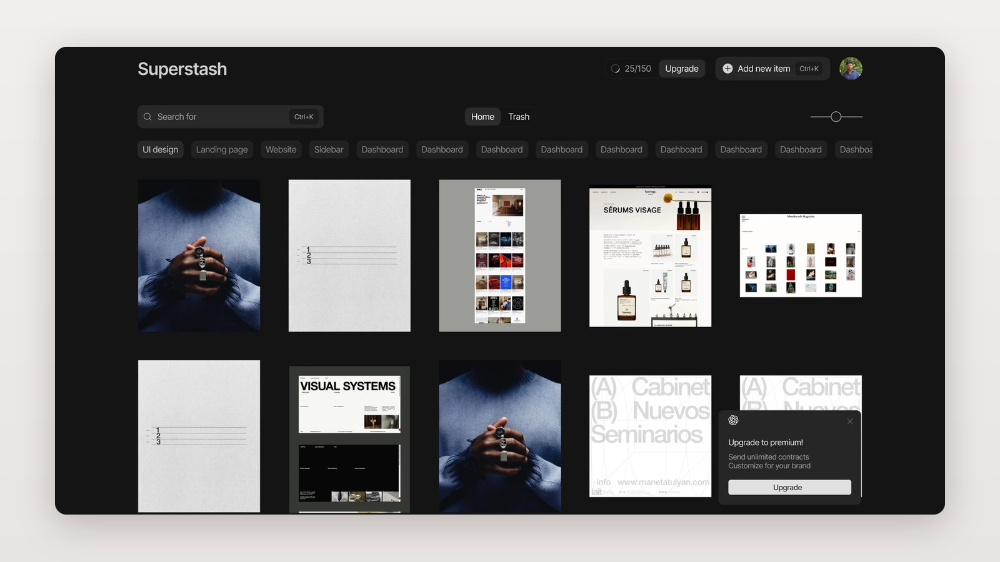
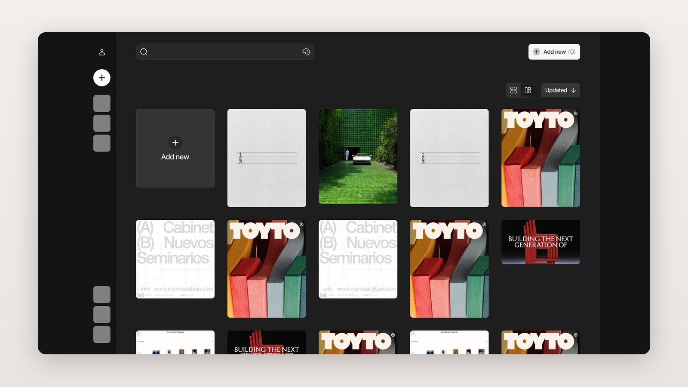
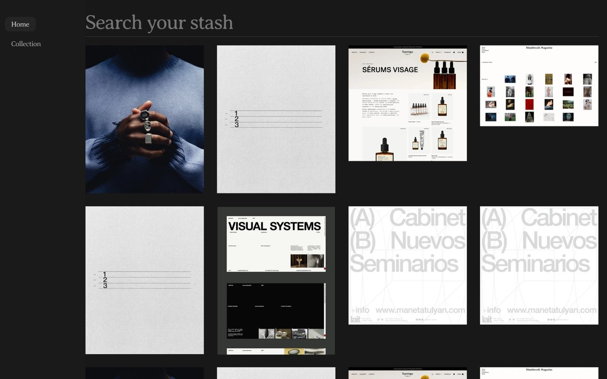

Superstash: save it, then actually find it again
Superstash is my tool for saving things I find online, like images, posts, quotes and articles, so I can find them later. My first version made saving very easy. That turned out to be the wrong goal, so I redesigned it to make saved things useful.

The problem
When something online caught my eye, I had no single place to keep it. Things ended up spread across Pinterest, screenshots, Notion, my downloads folder and chat apps.
Saving wasn’t the hard part. Finding things again was. I kept forgetting where I’d put them, so I kept relearning things I already knew.
Why other tools didn’t work for me
So I decided to build my own: quick to save, easy to find.
Limits
Just me, after work. I couldn’t build and polish everything.
Working beats pretty. I chose rough but working over polished but slow.
Built to grow. I made choices I wouldn’t have to undo when adding features later.
What I decided
01 I made saving one click. It backfired.
My first idea was to remove every step. A Save button appeared on any image I hovered over, so saving took one click.
It worked too well. I saved everything, and my library became the same messy pile I was trying to escape. Easy saving didn’t make my saves useful.

02 I didn’t fix it right away
I knew the fix: make saving a little harder on purpose. But saving and finding things had to work first, so I put the fix on hold. Choosing what to leave for later was a decision too.
03 Saving now takes two clicks (in progress)
Instead of a button on every image, you right-click and choose Save to Superstash. It’s one extra step, so saving becomes a choice instead of a habit.
The catch: right-click is harder to discover, and phones don’t have it. This hasn’t shipped yet, and I’m still testing it.
04 AI does the sorting
To make things easy to find, AI adds tags and a short description to every save. I wrote the prompts so it describes each save the way a person would. Nobody has to organise anything by hand. This part works best so far.

How the home screen changed
Before building, I tried several layouts for the home screen in Figma. Here are three of them. All of them would have worked. I chose the one at the top of this page because it was the most flexible: I can add buttons and features without changing the whole structure, and it still stays minimal.



What I got wrong
This was my first UX project. These mistakes changed how I work.
I started with screens
I spent a long time on the UI and kept coming up with new ideas. But I hadn’t decided what the product needed to do, so I often didn’t know what to work on next.
I designed an app, not a solution
I wanted to build an app, so I kept adding screens. The real work was the core problem: saving things and finding them again.
How I fixed it
I stopped designing and built the basics first, with help from AI coding tools. Polish can come later.
What I do now
I set the goal and the main flow before any UI, build the basics before polishing, and give every project a deadline. That’s how I shipped my next project, a WhatsApp campaign tool, in two weeks.
What I learned
I’m the only user so far, so there are no numbers yet. The biggest lesson: easy and good are not the same thing.
I made saving easy because that was my biggest complaint. But removing steps at the start just moved the problem further down the line. I only noticed because I used the tool every day.